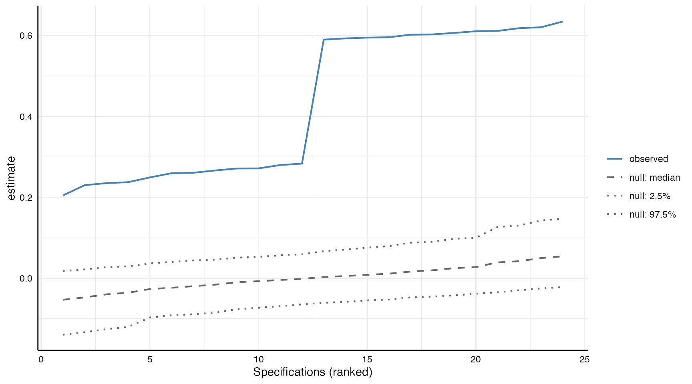
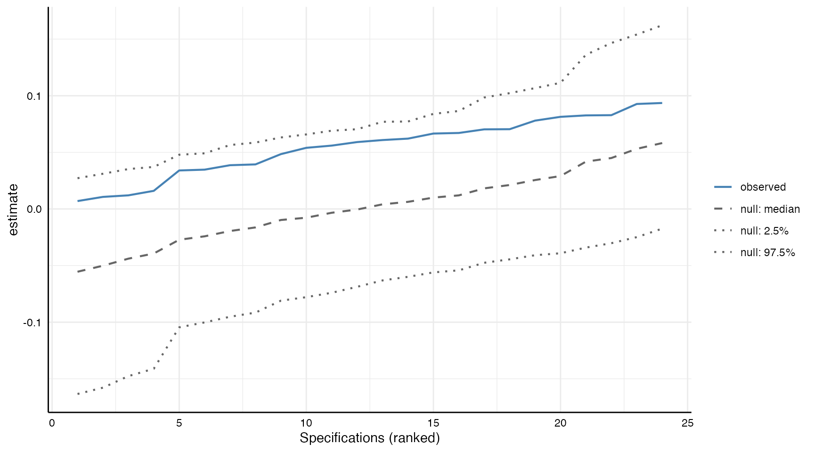

In their paper, Simonsohn et al. (2020) propose a third step within the logic of specification curve analysis, which refers to conducting inference tests across the entire range of the specification curve. This step aims to address the following question: Considering the full set of reasonable specifications jointly, how inconsistent are the results with the null hypothesis of no effect?
We have been contemplating the implementation of this third step in our package. Until recently, we have concluded that there remains significant uncertainty regarding when such joint inferences are appropriate (see, for example, the recent discussion by Del Giudice & Gangestad, 2021), who highlight:
“In principle, multiverse-style analyses can be highly instructive. At the same time, analyses that explore multiverse spaces that are not homogeneous can produce misleading results and interpretations, lead scholars to dismiss the robustness of theoretically important findings that do exist, and discourage them from following fruitful avenues of research. This can hinder scientific progress just as much as the proliferation of false, unreplicable findings does” (p. 2).
The issue is as follows: Multiverse or specification curve analyses can serve different purposes. In the simplest form, it may serve to explore and discover differences in effect sizes that relate to specific theoretical or analytical decisions. Yet, the method is also suggestive of being a “somehow better approach to testing a relationship”. The aim of this second purpose, which is akin to a robustness test, is to exhaust the multiverse of truly arbitrary decisions in order to gain some sort of aggregate finding that can be use to refute or support a hypothesis. As Del Giudice and Gangestad point out very convincingly, however, it is often not straight-forward to decide whether specification is truly arbitrary (or in their terms: exhibits principled equivalence) compared to another specification. Yet, if this is not the case, running any inference tests is futile as “Just a few decisions incorrectly treated as arbitrary can quickly explode the size of the multiverse, drowning reasonable effect estimates in a sea of unjustified alternatives.” (Del Giudice & Gangestad, 2021, p. 2).
For these reasons, we have been, and continue to be, concerned that
tools for such an inference test could be misused or lead to improperly
conducted robustness tests. Nevertheless, due to frequent inquiries, we
have now integrated a function called infer_curve() in the
latest development version of specr. It implements the
procedure described in the section “Inference with non-experimental
data” of the paper by Simonsohn et al. (2020).
How it works
The idea behind this inference approach is that one forces the null on the data. Have a look at the following section of the Simonsohn et al. (2020) paper (p. 1213):

In infer_curve(), this works as follows:
- For every specification , the dependent variable is modified so that the null hypothesis is true by construction: , where is the estimate observed in that specification. Each specification thus gets its own modified dependent variable.
- rows are drawn at random with replacement from the data set (with being the number of rows of the data set). The same rows are used for all specifications, which preserves the dependence between them.
- Every specification is refitted on these rows with as its dependent variable. Each specification keeps its own model, control variables, subset, and additions to the formula.
- Steps 2 and 3 are repeated many times (e.g., 1,000 times). This produces a distribution of specification curves that would be expected if all specifications had a true effect of zero.
Based on these curves, the observed specification curve can be tested with three test statistics:
- The median effect estimated across all specifications: is it more extreme than would be expected if all specifications had a true effect of zero?
- The share of specifications that obtain a statistically significant effect in the predicted direction: is it more extreme (higher) than would be expected if all specifications had an effect of zero?
- The aggregated z-value (Stouffer’s Z), which combines the p-values of all specifications: is it more extreme than would be expected if all specifications had an effect of zero?
Because the null is imposed by subtracting
from the dependent variable, this procedure requires models that are
linear in the dependent variable (e.g., lm,
lmer, or glm with a gaussian family), numeric
independent and dependent variables, and unstandardized estimates.
infer_curve() checks this before resampling (by refitting
every specification on its modified dependent variable, which has to
yield an estimate of zero) and stops otherwise. For example, logistic
regression models or structural equation models are not supported.
Preparations
Loading packages and data
For this tutorial, we will simply use the data set included in the
package, which we can call using example_data.
glimpse(example_data)
#> Rows: 1,000
#> Columns: 15
#> $ group1 <chr> "middle", "middle", "old", "old", "old", "middle", "middle", "y…
#> $ group2 <chr> "female", "male", "female", "female", "male", "male", "male", "…
#> $ group3 <chr> "C", "B", "A", "B", "A", "A", "C", "B", "C", "A", "C", "B", "A"…
#> $ x1 <dbl> 1.16616502, 0.76481253, -2.32781072, -0.50729975, -0.99903467, …
#> $ x2 <dbl> -0.36337844, 0.03490195, -0.99786005, -0.97004472, 0.54629183, …
#> $ x3 <dbl> -0.99899919, 0.12896300, -1.11167238, -0.08670481, 0.90082978, …
#> $ x4 <dbl> -0.29290911, -0.15539508, -1.27298782, -0.97830572, 2.56842916,…
#> $ c1 <dbl> 0.73628873, -0.72031278, 0.10362937, 1.78665608, -0.24463403, 0…
#> $ c2 <dbl> 0.17137360, 0.01651493, -2.89579197, -0.13769598, 2.02092928, -…
#> $ c3 <dbl> 0.2438919, -0.7708723, -6.9505025, -0.4307226, 2.8327862, -1.32…
#> $ c4 <dbl> 1.17397012, 0.00271097, 0.11513596, 0.84856292, -1.40719578, 0.…
#> $ y1 <dbl> -0.83896230, -1.19442262, -1.63184657, 0.20794834, -1.06889092,…
#> $ y2 <dbl> -1.15339449, -1.40708441, 0.46620798, 0.17421825, 2.89071414, 2…
#> $ y3 <dbl> -0.20911315, 0.17605870, -1.07664735, -0.37805585, -0.35389962,…
#> $ y4 <dbl> -0.10135448, -0.08908509, -0.27064865, 0.73415456, -0.20267287,…Setup specifications and run the specification curve analysis
We first run a standard specification curve analysis using the
functions setup() and specr(). In this
example, we investigate the relationship between two independent
variables (x1 and x2, e.g., two alternative
measures of the same construct) and the dependent variable
y1, with different combinations of two control variables
and in different subsets of the data.
specs <- setup(data = example_data,
y = "y1",
x = c("x1", "x2"),
model = "lm",
controls = c("c1", "c2"),
subsets = list(group2 = c("female", "male")))
results <- specr(specs)
summary(results)
#> Results of the specification curve analysis
#> -------------------
#> Technical details:
#>
#> Class: specr.object -- version: 1.0.1
#> Cores used: 1
#> Duration of fitting process: 0.091 sec elapsed
#> Number of specifications: 24
#>
#> Descriptive summary of the specification curve:
#>
#> median mad min max q25 q75
#> 0.44 0.26 0.2 0.63 0.26 0.6
#>
#> Descriptive summary of sample sizes:
#>
#> median min max
#> 500 500 1000
#>
#> Head of the specification results (first 6 rows):
#>
#> # A tibble: 6 × 25
#> x y model controls subsets group2 formula estimate std.error statistic
#> <chr> <chr> <chr> <chr> <chr> <fct> <glue> <dbl> <dbl> <dbl>
#> 1 x1 y1 lm no cova… female female y1 ~ x… 0.61 0.05 11.2
#> 2 x1 y1 lm no cova… male male y1 ~ x… 0.63 0.05 12.0
#> 3 x1 y1 lm no cova… all NA y1 ~ x… 0.62 0.04 16.4
#> 4 x1 y1 lm c1 female female y1 ~ x… 0.59 0.06 10.8
#> 5 x1 y1 lm c1 male male y1 ~ x… 0.61 0.05 11.2
#> 6 x1 y1 lm c1 all NA y1 ~ x… 0.6 0.04 15.6
#> # ℹ 15 more variables: p.value <dbl>, conf.low <dbl>, conf.high <dbl>,
#> # fit_r.squared <dbl>, fit_adj.r.squared <dbl>, fit_sigma <dbl>,
#> # fit_statistic <dbl>, fit_p.value <dbl>, fit_df <dbl>, fit_logLik <dbl>,
#> # fit_AIC <dbl>, fit_BIC <dbl>, fit_deviance <dbl>, fit_df.residual <dbl>,
#> # fit_nobs <dbl>So far, nothing new. We get the results of the specification curve analysis and can explore them descriptively or visually.
Refit the models under-the-null
Run the resampling procedure
To run the procedure, we simply use the function
infer_curve(), which requires the results, the
specification setup (or the data set), and the number of bootstrap
samples that should be drawn. Simonsohn et al. (2020) use 500 samples.
Here, we use 1,000 samples, which is a reasonable minimum for results
that are reported. As the procedure relies on random sampling, we set a
seed to make the results reproducible.
set.seed(42)
inference <- infer_curve(results, specs, n_samples = 1000)
#> Warning: package 'future' was built under R version 4.4.3
inference
#> Inference on the specification curve (resampling under the null)
#> -------------------
#> Technical details:
#>
#> Class: specr.infer -- version: 1.0.1
#> Cores used: 1
#> Duration of fitting process: 1.508 sec elapsed
#> Number of specifications: 24
#> Number of bootstrap samples: 1000
#>
#> Test statistics (two-sided, see ?summary.specr.infer):
#>
#> # A tibble: 3 × 6
#> statistic estimate null_lower null_upper p.value n_specs
#> <chr> <dbl> <dbl> <dbl> <dbl> <int>
#> 1 median 0.437 -0.0636 0.0621 0.000999 24
#> 2 share significant (positive) 24 0 10 0.000999 24
#> 3 aggregated z 45.6 -7.57 6.86 0.000999 24For specifications fitted with lm,
infer_curve() uses a fast least-squares routine that gives
the same results as lm(), so that even several thousand
bootstrap samples only take a few seconds. Other models are refitted
with their original model function, which takes longer. In this case,
the resampling can be parallelized by setting up a plan before running
infer_curve() (see
vignette("parallelization")), e.g.:
library(furrr)
plan(multisession, workers = 4)
inference <- infer_curve(results, specs, n_samples = 1000)
plan(sequential)The results are identical whether they are computed sequentially or in parallel.
Summarize findings
The test statistics are obtained by using the generic function
summary() around the resulting object:
summary(inference)
#> # A tibble: 3 × 6
#> statistic estimate null_lower null_upper p.value n_specs
#> <chr> <dbl> <dbl> <dbl> <dbl> <int>
#> 1 median 0.437 -0.0636 0.0621 0.000999 24
#> 2 share significant (positive) 24 0 10 0.000999 24
#> 3 aggregated z 45.6 -7.57 6.86 0.000999 24For each test statistic, the output shows the observed value
(estimate), the range in which 95% of the values under the
null fall (null_lower and null_upper), and the
p-value, i.e., the share of curves under the null whose statistic is at
least as extreme as the observed one. Here, the observed median estimate
is 0.44, whereas 95% of the medians under the null lie between -0.06 and
0.06. Similarly, 24 of 24 specifications obtain a significant positive
effect, which is more than would be expected if all specifications had a
true effect of zero. Not a single curve under the null was as extreme as
the observed curve, so all p-values are at their minimum of 1 / (1 +
1,000).
By default, the tests are two-sided. If the direction of the effect
was predicted before the results were known, one-sided tests can be
obtained with the argument direction:
summary(inference, direction = "greater")
#> # A tibble: 3 × 6
#> statistic estimate null_lower null_upper p.value n_specs
#> <chr> <dbl> <dbl> <dbl> <dbl> <int>
#> 1 median 0.437 -0.0636 0.0621 0.000999 24
#> 2 share significant (positive) 24 0 8 0.000999 24
#> 3 aggregated z 45.6 -7.57 6.86 0.000999 24The test statistics can also be computed separately for groups of specifications, e.g., for each independent variable:
summary(inference, group = "x")
#> # A tibble: 6 × 7
#> x statistic estimate null_lower null_upper p.value n_specs
#> <chr> <chr> <dbl> <dbl> <dbl> <dbl> <int>
#> 1 x1 median 0.605 -0.0820 0.0845 9.99e-4 12
#> 2 x1 share significant (posit… 12 0 8 9.99e-4 12
#> 3 x1 aggregated z 41.4 -5.93 5.96 9.99e-4 12
#> 4 x2 median 0.260 -0.0566 0.0583 9.99e-4 12
#> 5 x2 share significant (posit… 12 0 6 9.99e-4 12
#> 6 x2 aggregated z 23.1 -5.39 5.32 9.99e-4 12Plot inference curve
Simonsohn et al. also suggest that the observed specification curve can be plotted against the expected under-the-null specification curves. In the figure, the estimates of each curve are ranked from lowest to highest. The grey lines represent the median as well as the 2.5th and 97.5th percentiles of the ranked curves under the null.
plot(inference)
As we can see, the observed curve is clearly different from the curves that would be expected if the true effect was zero.
For comparison: no effect in any specification
To illustrate what the results look like if there is no effect, we
shuffle the dependent variable, which removes any relationship between
y1 and the other variables, and repeat the analysis.
shuffled <- example_data
shuffled$y1 <- sample(shuffled$y1)
specs_null <- setup(data = shuffled,
y = "y1",
x = c("x1", "x2"),
model = "lm",
controls = c("c1", "c2"),
subsets = list(group2 = c("female", "male")))
results_null <- specr(specs_null)
set.seed(42)
inference_null <- infer_curve(results_null, specs_null, n_samples = 1000)
summary(inference_null)
#> # A tibble: 3 × 6
#> statistic estimate null_lower null_upper p.value n_specs
#> <chr> <dbl> <dbl> <dbl> <dbl> <int>
#> 1 median 0.0600 -0.0655 0.0727 0.0929 24
#> 2 share significant (positive) 5 0 10.0 0.120 24
#> 3 aggregated z 6.22 -6.92 7.78 0.0949 24Now, the observed statistics lie within the range of the statistics under the null, and the p-values are not significant. Accordingly, the observed curve lies within the curves under the null:
plot(inference_null)
A note on earlier development versions
Earlier development versions of specr included this
procedure under the name boot_null(). That implementation
refitted each specification on too many rows, which made the curves
under the null too narrow and the p-values too small.
boot_null() still works but is deprecated: it now calls
infer_curve(). If you used boot_null() before,
please recompute your results with infer_curve().
References
Del Giudice, M., & Gangestad, S. W. (2021). A traveler’s guide to the multiverse: Promises, pitfalls, and a framework for the evaluation of analytic decisions. Advances in Methods and Practices in Psychological Science, 4(1), https://journals.sagepub.com/doi/full/10.1177/2515245920954925.
Simonsohn, U., Simmons, J.P. & Nelson, L.D. (2020). Specification curve analysis. Nature Human Behaviour, 4, 1208–1214. https://doi.org/10.1038/s41562-020-0912-z